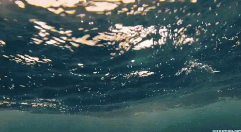

La contaminación del agua es cualquier cambio químico, físico o biológico en la calidad del agua que tiene un efecto dañino en cualquier cosa viva que consuma ese agua. Cuando los seres humanos beben el agua contaminada tienen a menudo problemas de salud. La contaminación del agua puede también puede hacer a esta inadecuada para el uso deseado. Hay varias clases de agentes contaminantes del agua. Los primeros son agentes causantes de enfermedad. Éstos son bacterias, virus, protozoos y los gusanos parásitos que se incorporan desde los sistemas de aguas residuales y las aguas residuales sin tratar. Una segunda categoría de agentes contaminantes del agua son los agentes consumidores de oxígeno; residuos que se pueden descomponer por las bacterias consumidoras de oxígeno. Cuando las poblaciones de bacterias son grandes la descomposición de los residuos tiene lugar y se consume mucho oxígeno pudiendo agotar el oxígeno disuelto en el agua. Esto puede ser causa de que otros organismos que viven en el agua, tal como pescados, mueran. Una tercera clase de agentes contaminantes del agua son los agentes contaminantes inorgánicos solubles en agua, tales como ácidos, sales y metales tóxicos. Grandes cantidades de estos compuestos harán el agua inapropiada para beber y pueden causar la muerte de la vida acuática. Otra clase de agentes contaminadores del agua son los nutrientes; loas nitratos y los fosfatos solubles en agua que causan el crecimiento excesivo de las algas y de otras plantas acuáticas, que agotan la fuente de oxígeno del agua. Esto mata a pescados y, cuando esta se encuentra en agua potable, puede matar a niños infantiles. El agua se puede también contaminar por un número de compuestos orgánicos tales como aceite, plásticos y pesticidas, que son dañinos para los seres humanos y para las plantas y animales acuáticos. Una categoría muy peligrosa es el sedimento suspendido, porque causa una disminución en la absorción de la luz por el agua y las partículas separan compuestos peligrosos tales como pesticidas a través del agua. Finalmente, los compuestos radiactivos solubles en el agua pueden causar cáncer, defectos de nacimiento y daño genético siendo por tanto agentes contaminantes muy peligrosos del agua.
¿Cómo detectamos la contaminación del agua?
La contaminación del agua se detecta en los laboratorios, donde pequeñas muestras de agua se analizan para diversos tipos de contaminantes. Los organismos vivos tales como pescados se pueden también utilizar para la detección de la contaminación del agua. Los cambios en su comportamiento o crecimiento nos demuestran, que el agua en la que viven está contaminada. Las características específicas de estos organismos pueden dar información sobre la clase de contaminación en el ambiente. Los laboratorios también utilizan modelos por computadora para determinar qué peligros puede haber en ciertas aguas. Importantes son los datos que se poseen y se almacenan en la computadora sobre el agua, para que la computadora entonces determine si el agua tiene cualquier impureza.
¿Qué es contaminación por calor, cuál es la causa y cuáles son los peligros?
 En la mayoría de los procesos de fabricación el calor es originado y se debe añadir al ambiente, porque es calor inútil. La manera más barata de hacer esto es introducirla al agua superficial próxima, pasarla a través de la planta, y volver el agua caliente a la masa de agua superficial. El calor que contiene ese agua tiene efectos negativos en toda la vida acuática de la masa de agua que recibe esa agua caliente. Esta es la clase de contaminación que se conoce comúnmente como contaminación por calor o contaminación termal. El agua más caliente disminuye la solubilidad del oxígeno en el agua y también hace que los organismos que viven en el agua respiren más rápidamente. Muchos organismos de este agua entonces morirán por la escasez de oxígeno, o llegan a ser más susceptibles a las enfermedades.
| LUNES | 1 a 2 |
| MARTES | 2 a 3 |
| MIERCOLES | 3 a 4 |
| JUEVES | 4 a 5 |
| VIERNES | 5 a 6 |
| SABADO | 6 a 7 |
| DOMINGO | 7 a 8 | Para saber más puedes registrarte en nuestro suguiente formulario